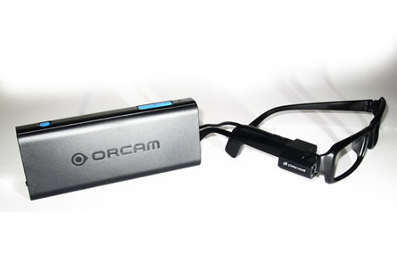

Orcam

Puntando il dito verso uno specifico oggetto, l'utente indica alla fotocamera OrCam cosa debba essere letto e interpretato. Il modulo fotocamera ST VX6953 e il processore di immagine STV0987 insieme analizzano e interpretano la scena e il dispositivo montato sugli occhiali la descrive verbalmente all'utente. Utilizzando la tecnologia di ST e alcuni suoi algoritmi, la fotocamera OrCam legge rapidamente una scena o un testo in diverse condizioni di illuminazione e su differenti supporti, come giornali o segnali stradali. Inoltre, sebbene la fotocamera sia già dotata di una libreria pre-memorizzata di oggetti, l'utente può continuare il processo di apprendimento del dispositivo insegnando a OrCam a interpretare nuovi oggetti durante il suo utilizzo.